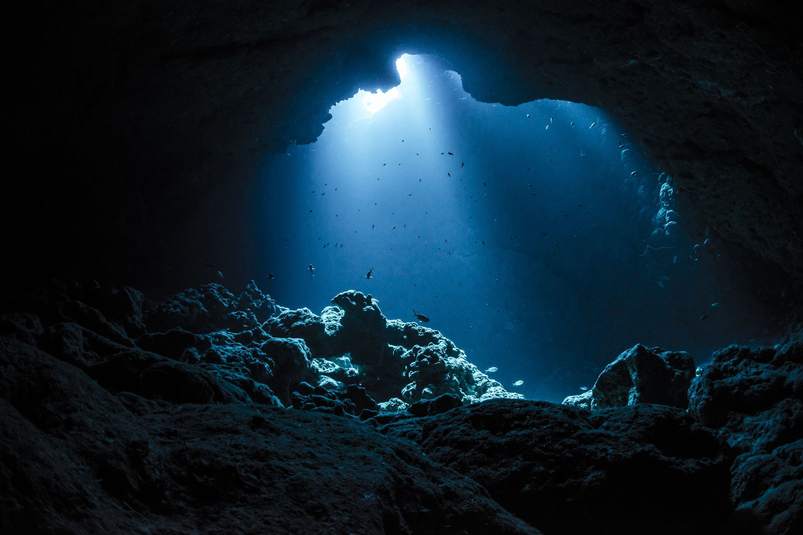

The Deep Ocean

The depth of the ocean is on average 4000 metres. In this area also known as "the deep" there is no light, extremply high pressure
and temperatures that are much more stable than on the surface. Life exist under these coditions and
everyday we discover a litte more about it's diversity, weaknesses and the crucial services it provides to the entire planet. The Deep Ocean plays a major role in climate change mitogation.
By storing a large part of the CO2 produced by human activities and by absorbing the heat accumulated by greenhouse effect,
the Deep Ocean slows down the warming of surface waters and lands.
Below the ocean's surface is a mysterious world that accounts for over 95 percent of Earth's living space—it could hide 20 Washington Monuments stacked on top of each other.
But the deep sea remains largely unexplored. As you dive down through this vast living space you notice that light starts fading rapidly.
By 650 feet (200 m) all the light is gone to our eyes and the temperature has dropped dramatically. Dive deeper and the weight of the water above continues to accumulate to a massive crushing force.
Any light still filtering down has diminished to appear completely black, leaving only animals and bacteria to produce the light found here. By 13,000 feet (4,000 meters),
the temperature hovers just below the temperature of your refridgerator. At this depth, we've reached the average depth of the deep-sea floor,
a place that may start to get a little muddy. The further we dive down from the surface, the less new food is available, making the fight to survive that much more challenging.
Despite these harsh conditions, there is life—an astounding variety of creatures that will boggle your mind. You can't dive to the deep ocean on your own,
of course, but scientists have a variety of sophisticated technologies to explore this vast frontier.